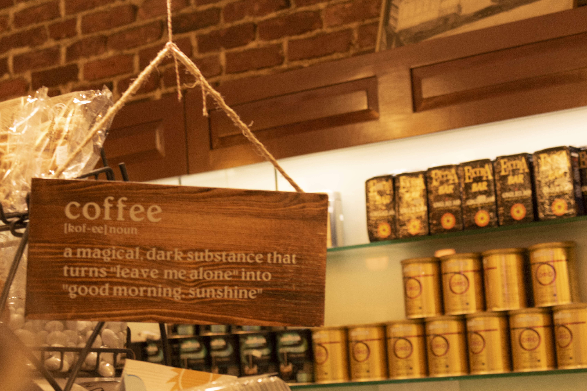
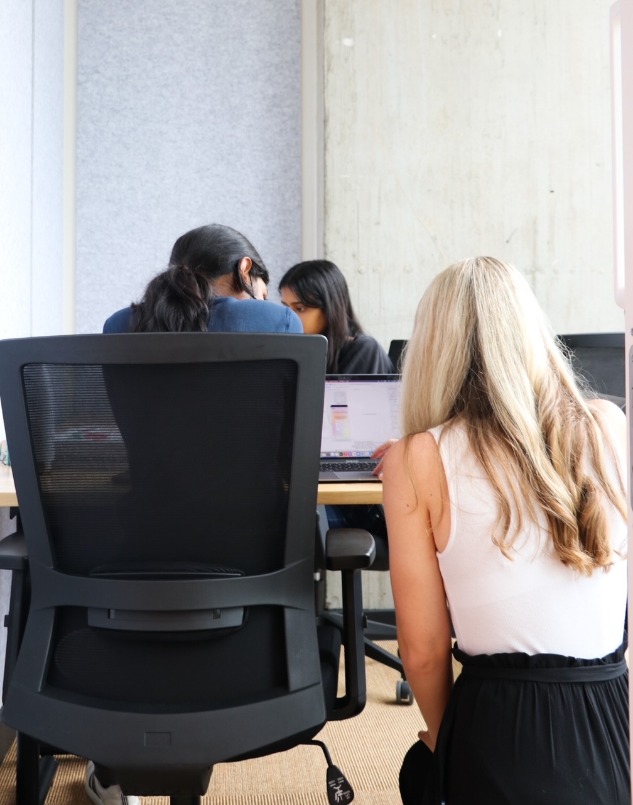

Hello, world!
I'm Kamryn (or Kammy)!
I am currently a senior in Quincy House
studying Computer Science with a secondary in Educational Studies.
I'm from Sandusky, Ohio - Home of Cedar Point (pictures below)!
I'm incredibly passionate about using computer science & coding to help others, and to
specifically help in educational settings. I started coding when I was 13 after being offered an opportunity
to attend a Kode With Klossy summer camp. It was a truly life-changing experience, and I fell
in love with computer science during it. I've always loved solving puzzles, and I was 🎶 so obsessed 🎶 with the idea of being able to create
helpful or fun applications that could be in the pockets & hands of people around the world!
In particular, I adore coding in Swift and working in iOS development. I started working as a CS50 Teaching Fellow during my sophomore Fall semester to hopefully help students
fall in love with CS like I did, and I've also continued teaching & staying in touch with the Kode With Klossy community since 2016.
I am also pursuing a citation in French here at Harvard! I started learning French in 1st grade
after one of my friends asked if we could race to see who could become fluent first on Duolingo..... I
think she may have forfeited the challenge a while ago....
Speaking of Duolingo (see below), I have also worked in designing and creating media, primarily around computer science educational intiatives.
At the moment, I am super excited to be a Co-Director of Marketing & Strategy for WECode @ Harvard, the world's largest undergraduate run women in STEM conference.
If you are interested in volunteering at it or attending, please chat with me! It is happening on February 22-23 of this year! 🎊
My Life in a Few Videos & Photos 🖼️
A Recent Duolingo Marketing Ad
My Hometown
My 💕 for coffee
Teaching at Kode With Klossy
CS50 Puzzle Day